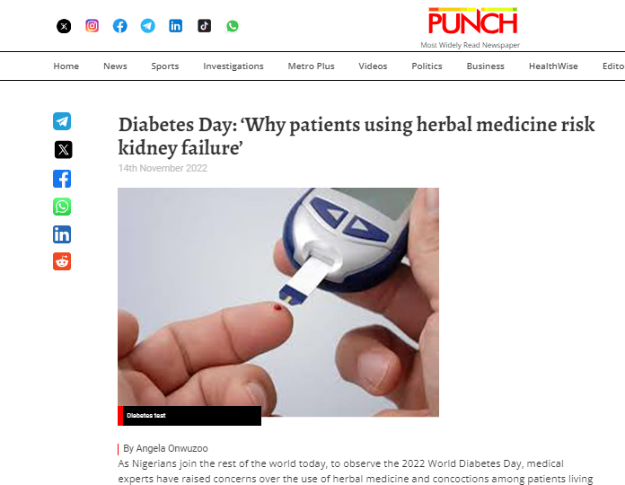
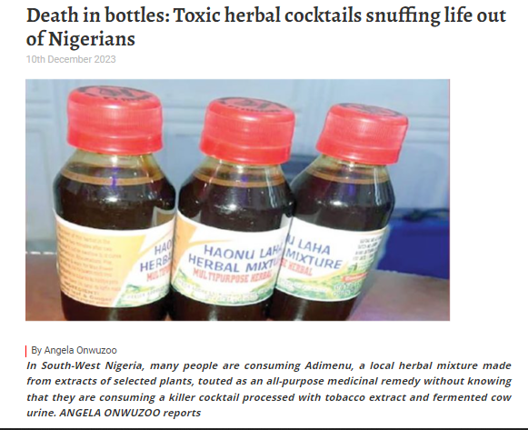
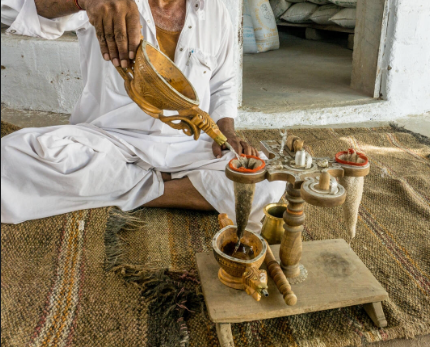

Roadside Diabetes Herbal Concoctions Almost Ruined My Life Until I Discovered This Indian Secret
BY Adam. O , JUNE 27, 2024 11:00 AM
When I was diagnosed with type-2 diabetes, I felt my life was over.
I couldn’t enjoy the sweet foods I loved. I couldn’t walk without sweating like a Christmas goat.
My blood sugar level was as high as 9.7. It was that bad.
It Was So Bad It Even Affected My Bedroom Performance...
Just 2 minutes and everything goes soft.
This poor performance affected my marriage in ways I can't even explain.
My wife was always nagging and angry.
My Home Felt Like Hell...
The high cost of insulin and hospital treatments for my diabetes made me so broke I couldn't fulfill my family responsibilities.
I couldn’t pay my kids' school fees or enjoy basic things in life.
It was depressing.
I Was Like the Walking Dead...
I felt like nothing in life was working.
I spent at least 150k per month on managing my diabetes with drugs and medical check-ups.
Then, one of my friends introduced me to an unregulated roadside herbal maker.
I Thought Regular Roadside Herbs Would Cure My Diabetes...
I imagined myself drinking soft drinks and eating cakes within 3 weeks.
But what happened next will shock you.
Guess What?
The Herbal Concoctions Made Me Worse…
Whenever I drank the smelly concoction filled with maggots and slimy ingredients, I felt worse.
The herbalist said it was just a side effect and I would get used to it.
At first, I believed him.
But then I noticed ants rushing to my urine.
My performance in the bedroom got worse.
I Went from 2 Minutes Man to 2 Seconds Boy...
My wife, frustrated, started rubbing it in my face but I couldn’t blame her.
The whole thing was frustrating.
I Felt Helpless...
I got seriously thought it was a spiritual attack.
I drank all sorts of things from special water to holy oil, and even more unprocessed herbal mixtures.
Then One Day I Had a Deep Rethink...
Could it be that these herbal mixtures were making my diabetes worse?
I asked myself.
So I started researching and saw articles confirming my suspicions.
Like this….
And This…
Then I Decided to Stop Unregulated Herbs...
Dear friend, if you’re trying to manage diabetes, be it type 1 or type 2, your diabetes can get so bad that the hospital will become your second home.
It almost happened to me.
My doctor told me to give up on all that herbal stuff.
I was on the brink of giving up Until I Found Dr. Akin’s Indian Diabetes Silencing Solution...
At first, I was skeptical. But Dr. Akin, a strong advocate against unprocessed herbal mixtures, explained to me:

“These herbs contain toxic, unprocessed inactive ingredients that might worsen your diabetes.”
Doctor Akin–Holistic Wellness Consultant
Dr. Akin explained that unregistered herbalists don’t professionally extract the active ingredients.
This puts stress on your kidneys, liver, and pancreas.
He told me of a man who lost his life due to kidney failure from taking unregulated mixture
Finally, Dr. Akin Revealed the Secret...
He discovered a solution from the Bishnoi tribe in India known for exceptional health and longevity.
This tribe uses a formula that helps drop high blood sugar and diabetes.
I Decided to Give It a Try But What Happened Next Will Shocking...
At first, I didn’t notice any change.
But after about 3 weeks, my bedroom performance improved.
My blood sugar dropped drastically, and I didn’t get tired after walking unlike before.
This is an Indian Miracle!
I’m the last person to give a long testimony online, but I decided to do it because of the miraculous change in my life.
Diabetes almost ruined my life, but this Indian Diabetes Silencer solution saved me.
Don’t Let Diabetes Ruin Your Life...
At first, I didn’t notice any change.
But after about 3 weeks, my bedroom performance improved.
My blood sugar dropped drastically, and I didn’t get tired after walking unlike before.
This is an Indian Miracle!
I’m the last person to give a long testimony online, but I decided to do it because of the miraculous change in my life.
Diabetes almost ruined my life, but this Indian Diabetes Silencer solution saved me.
Don’t Let Diabetes Ruin Your Life...

I don’t know what kind of symptoms you’re dealing with, but I know the stress and side effects of high blood sugar are hellish.
We are talking of severing of limbs, Blindness, heart attack and other gory side effect of ignoring it...